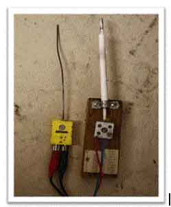
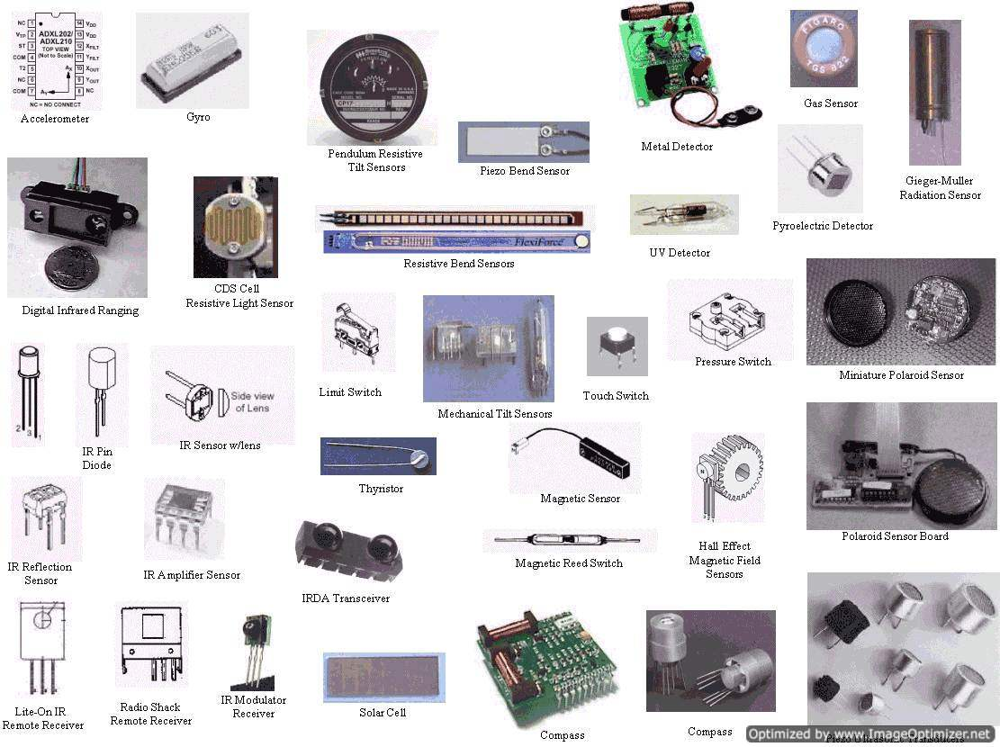

Sensor
A sensor is a device which is capable of converting any physical quantity to be measured into a signal which can be read, displayed, stored or used to control some other quantity. This signal produced by the sensor is equivalent to the quantity to be measured. Sensors are used to measure a particular characteristic of any object or device. For example a thermocouple, a thermocouple will sense heat energy (temperature) at one of its junction and produce equivalent output voltage which can be measured by a voltmeter. More the temperature rise, higher the voltage read by the voltmeter. All sensors need to be calibrated with respect with some reference value or standard device for accurate measurement. Below is the figure of a thermocouple.

Note that a transducer and a sensor are not the same. In the above given example of thermocouple. The thermocouple acts as a transducer but the additional circuits or components needed like the voltmeter, a display etc together from a temperature sensor. Hence the transducer will just convert the energy from one form to another and all the remaining work is done by the additional circuits connected. This whole device forms a sensor. Sensors and transducers are closely related to each other.
Characteristics of Sensors
A good sensor should have the following characteristics
1. High Sensitivity: Sensitivity indicates how much the output of the device changes with unit change in input (quantity to be measured). For example the voltage of a temperature sensor changes by 1mV for every 1°C change in temperature than the sensitivity of the sensor is said to be 1mV/°C.
2. Linearity: The output should change linearly with the input.
3. High Resolution: Resolution is the smallest change in the input that the device can detect.
4. Less Noise & Disturbance.
5. Less power consumption.
Types of Sensors
Sensors are classified based on the nature of quantity they measure. Following are the types of sensors with few examples.
1. Acoustic & sound sensors
e.g.: Microphone, Hydrophone.
2. Automotive sensors
e.g.: Speedometer, Radar gun, Speedometer, fuel ratio meter.
3. Chemical Sensors
e.g.: Ph sensor, Sensors to detect presences of different gases or liquids.
4. Electric & Magnetic Sensors
e.g.: Galvanometer, Hall sensor (measures flux density), Metal detector.
5. Environmental Sensors
e.g.: Rain gauge, snow gauge, moisture sensor.
6. Optical Sensors
e.g.: Photodiode, Phototransistor, Wave front sensor.
7. Mechanical Sensors
e.g.: Strain Gauge, Potentiometer (measures displacement).
8. Thermal & Temperature sensors.
e.g.: Calorimeter, Thermocouple, Thermistor, Gardon gauge.
9. Proximity & Presences sensors
A proximity or presences sensor is the one which is able to detect the presences of nearby objects without any physical contact. They usually emit electromagnetic radiations and detect the changes in reflected signal if any.
e.g.: Doppler radar, Motion detector.
Further classification can be done based on the principle of operation and nature of output signal (analog or digital).

 by
by